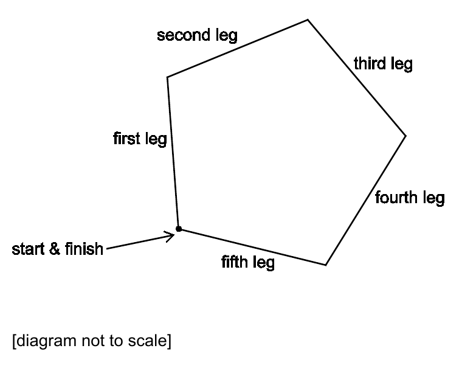
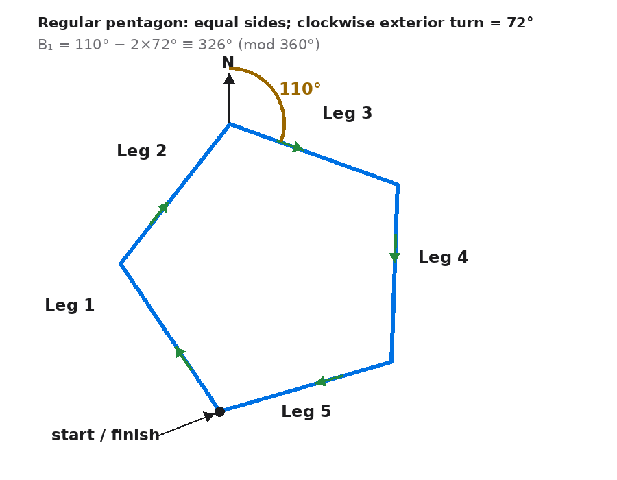

A cross-country running track is in the shape of a regular pentagon. [diagram not to scale]
Competitors run clockwise around the track.
When on the third leg of the course they run on a bearing of $110^\circ$.
What bearing do they run on for the first leg?
A $034^\circ$ B $038^\circ$ C $106^\circ$ D $178^\circ$ E $182^\circ$ F $244^\circ$ G $322^\circ$ H $326^\circ$

Official source figure: NSAA 2020 specimen Section 1 Part A Mathematics Q20 (diagram not to scale).
Not completed in the lesson — official-reference reconstruction below.
[1 mark · multiple choice]
Strategy. Recover the heading change at each vertex before using the given bearing. A runner following a polygon turns through the exterior angle, so calculate the regular pentagon’s exterior angle from one full turn and distinguish it from the interior angle.
Why this method applies. A bearing is a direction measured clockwise from north. Moving from one straight leg to the next changes the runner’s heading by the angle physically turned at the vertex. For a convex regular polygon, the total exterior turn around a complete circuit is $360^\circ$, shared equally among all vertices.
Formula or definition first. For a regular $n$-gon, exterior angle $=\frac{360^\circ}{n}$ and interior angle $=180^\circ-\frac{360^\circ}{n}$. With $n=5$, the heading change is $\frac{360^\circ}{5}=72^\circ$, while the interior angle is $108^\circ$.
Full intermediate derivation. Compute $360\div5=72$. Check the geometric pair: $72^\circ+108^\circ=180^\circ$. The quantity to carry forward is $72^\circ$ because it is the turn between consecutive legs. The $108^\circ$ interior angle describes the inside of the pentagon and is not directly added to a navigation heading.
Difficult transition. The diagram’s orientation does not define north. A page can be rotated without changing the real bearing, so ‘the first leg looks vertical’ is not evidence of a $000^\circ$ bearing. The north reference and the given third-leg bearing provide the absolute orientation; the pentagon supplies only relative changes.

Check back / sense check. Five equal exterior turns give $5(72^\circ)=360^\circ$, so the runner returns to the original heading after one circuit. This confirms that $72^\circ$, not $108^\circ$, is the per-leg heading increment.
Strategy. Work backward from the third leg to the first. The route is clockwise, so moving forward from leg 1 to leg 3 adds two exterior turns; reversing that movement subtracts two turns from the known $110^\circ$ heading. Normalise the result to a three-digit bearing.
Why this method applies. Leg 1 to leg 2 is one vertex turn and leg 2 to leg 3 is a second. The first-leg heading plus $2\times72^\circ$ is congruent to the third-leg heading modulo $360^\circ$. Because bearings wrap around after a full revolution, a negative intermediate angle is converted by adding $360^\circ$.
Formula or definition first. Use $B_3\equiv B_1+2e\pmod{360^\circ}$, where $e=72^\circ$ and $B_3=110^\circ$. Hence $B_1\equiv110^\circ-2(72^\circ)\pmod{360^\circ}$.
Full intermediate derivation. Calculate $2(72^\circ)=144^\circ$. Then $110^\circ-144^\circ=-34^\circ$. Add one full turn: $-34^\circ+360^\circ=326^\circ$. In three-digit bearing notation the answer is $\boxed{326^\circ}$, option H. Substitution forward gives $326+72=398\equiv38^\circ$, then $38+72=110^\circ$.
Difficult transition. The apparent tension between ‘clockwise’ and subtraction disappears once time direction is stated. Clockwise travel adds $72^\circ$ from first to third. The question asks for an earlier leg from a later bearing, so the algebra reverses the travel and subtracts. Adding $144^\circ$ to 110 would find a later heading instead.
Check back / sense check. Forward reconstruction exactly returns the given third-leg bearing: $326^\circ+144^\circ=470^\circ\equiv110^\circ$. The result is between $000^\circ$ and $359^\circ$ and is written with three digits, satisfying bearing convention.